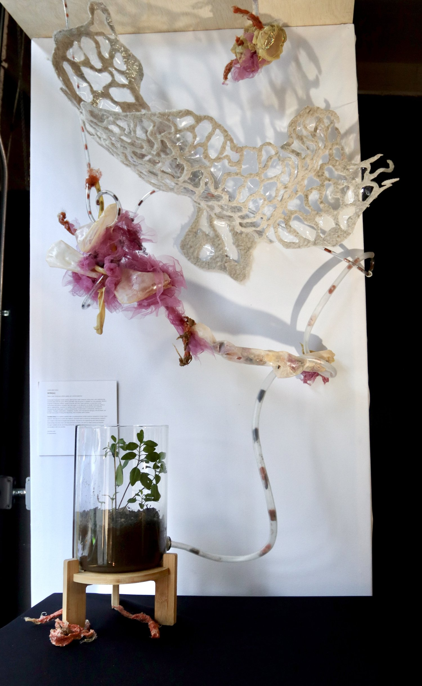
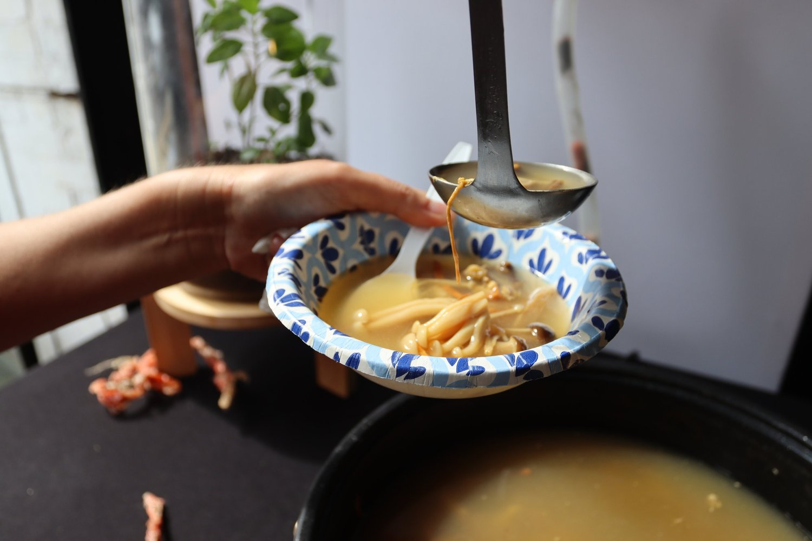

With(In)

The piece explores Cordyceps fungi that grow inside insects, altering behavior and redistributing nutrients. The work reimagines these fungi's desire to reconnect with insect hosts, a cycle interrupted by human cultivation practices. The installation pumps mycelium into terrarium soil, challenging scientific frameworks by embracing contamination rather than isolation. Through interspecies collaboration, the work presents life and death as cyclical transformation.

Cordyceps Chicken Soup
Ingredients: Cordyceps militaris, mushroom medley, chicken bones, ginger, water, shaoxing wine, salt, hot pot, soup ladle, bowl
The soup contextualizes traditional Chinese medicine applications of Cordyceps for enhancing vital energy. The compound cordycepin offers anticancer, anti-inflammatory, and immune-modulating properties concentrated in the fungus's fruiting body. Death transitions into rebirth, continuing natural cycles.